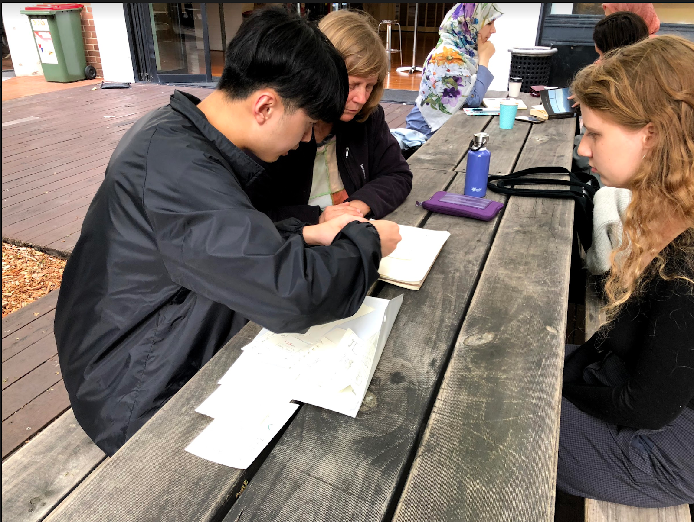
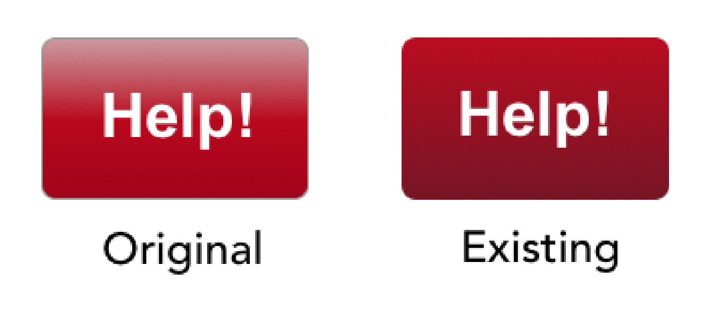
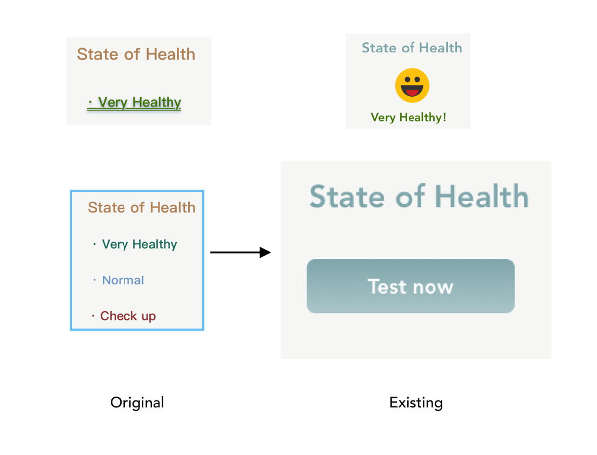
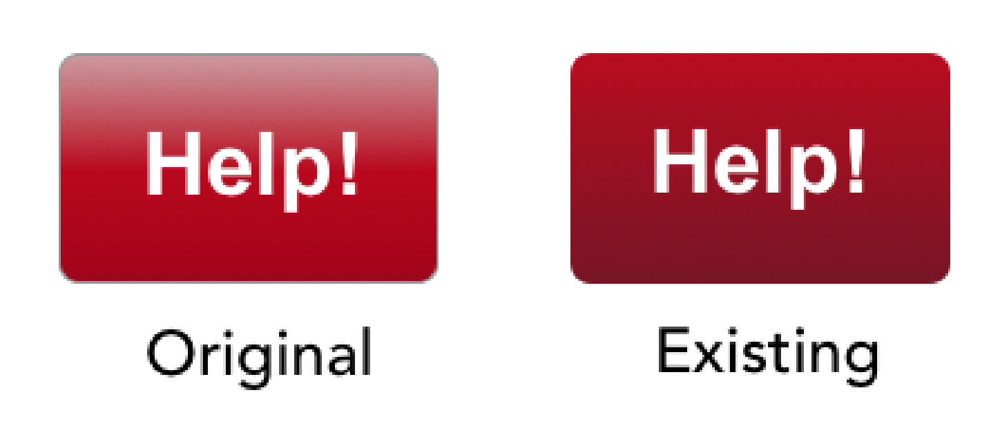
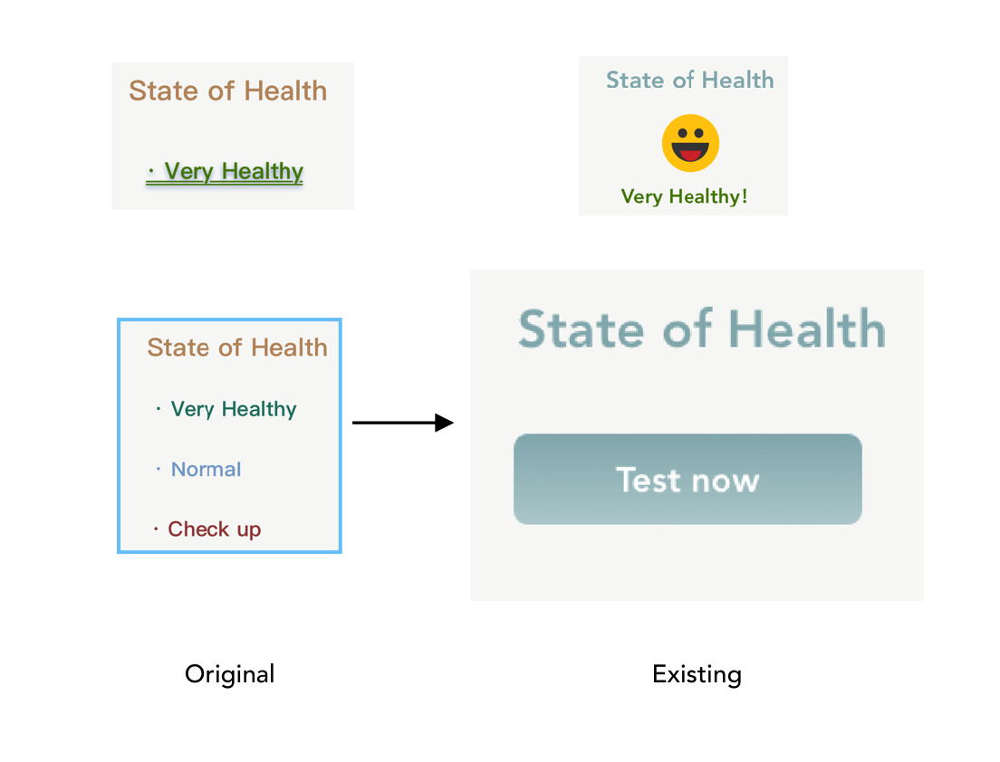

Portfolio
AMS
Take less of walk, own best of body.
What is AMS?
AMS（autonomous mobility scooter）is a very interactive application primarily for the elderly. It can help elderly people with mobility difficulties to go further afield. AMS can be operated on an iPad-size device, and users simply put the device on a mobility scooter in their nursing home.
Features
Interface:
Large screen display and text prompts under icons for the elderly.
Health:
Helping users monitoring their health consideration (heartbeat, blood pressure etc.) and sharing their health in real time to the authorized party (doctor and children).
Map: There are four modes in the map.
Click the destination on the map – Easy and fast;
Drag the wheelchair icon – Keep use their fingers and brain that can prevent senile dementia;
Use stroll mode – Only need to set up time, destination is randomly selected by the system (normally park or river);
Search – Click icons or typing name of destination.
Typeface & Colour palette:
All font sizes are bigger than 16 pixels. Peaches, apricots, warm tans, terracottas, pinks, softer shades of reds and oranges are warming and can help with circulation and energy levels.
Safety：
When user's heartbeat is higher than 125, the slowing speed page will automatically come up.
Design process
The background research is based on the result of over 150 participants of questionnaire and 10 interviews. User testing number: 8 Participants. Evaluation methods used: Persona-Based Walkthrough; Think aloud; Observation; Scenario; Heuristic evaluation; SAM template.
Based on the feedbacks, fixing issues of the wireframe redesign it into an interactive prototype. Moreover, inviting 5 target users test the prototype in Invision while summarizing results and recommendations to find existing problems. Finally, Improve the interactive prototype into a complete application.

User flow chart
Wireframe

Interactive prototype

Design decisions
 



According to research and tutors' comments, the elderly application is more suitable for running on large screen devices. So, the design of the interface changed from mobile phone size to iPad size.
The layout of the health management and the excessive text make the entire page look inharmonious. Replacing them with emoticons and buttons will make the page clearer and more concise.
Some important buttons have a gradient color that allows the user to focus on them for the first moment. Because of the 2D colour used by most of the interface, the gradient colour of the buttons seems too abrupt. Hence, the important buttons in the final product are designed to be light gradients.
Reflection
Benefits - It contains a lot of interactive features, a good combination of user feedback to improve the product. Designed a lot of different functions and interfaces to make the product complete.
Drawbacks - On some of the screens, the different elements are arranged in an unstructured way which makes it hard to understand how they relate; the button of changing font size can be clearer in the header.
Improvements - Using some sort of grid system to bring order to the elements on your screens; directly shows "A+" and "A-" rather than click "A" first.